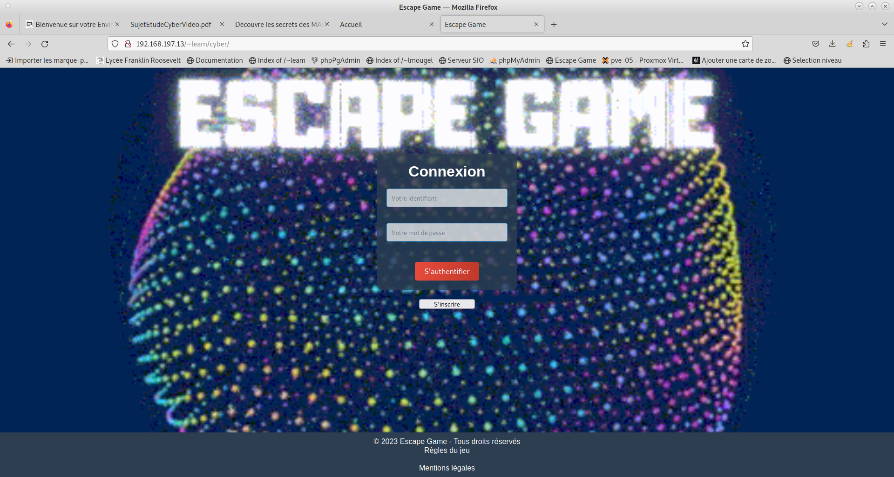
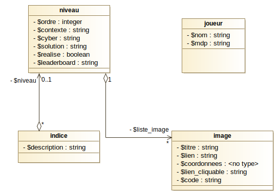
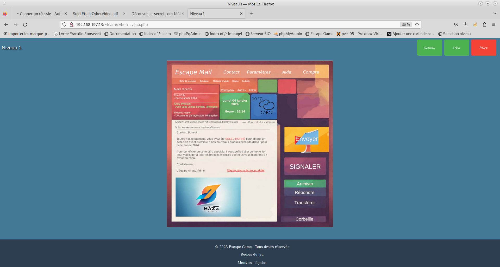
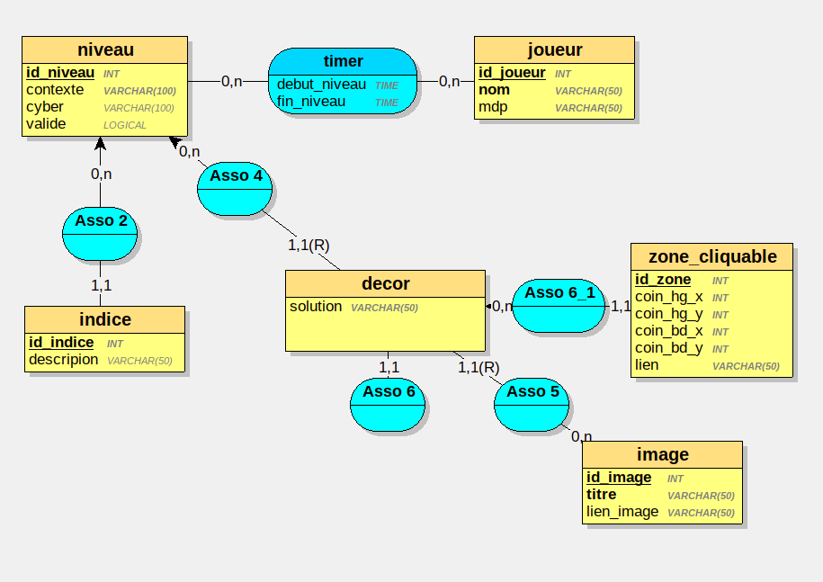

Escape Game Cybersécurité

Ce projet est un projet en équipe où il faut créer un jeu sur le thème de la cybersécurité dans le but de sensibiliser un public non-averti aux enjeux de la cybersécurité. (Sujet inspiré ANSSI). Je vais décrire les tâches que j'ai effectué.
Langages utilisés
HTML PHP CSS SQL
Outils utilisés
BlueFish
Compétences abordées
B1-1 : Gérer le patrimoine informatique
B1-2 : Répondre aux incidents et aux demandes d’assistance et d’évolution
B1-3 : Développer la présence en ligne de l’organisation
B1-4 : Travailler en mode projet
B1-5 : Mettre à disposition des utilisateurs un service informatique
Tâches
Documentation technique
Je me suis occupé de la partie documentation avec les plannings (plan projet), le MCD, le cahier des charges, le diagramme MVC et le manuel technique du développement


Site
J'ai rédigé les fichiers POO de création de classes, tout les fichiers PHP, le javascript.
Le site utilise les sessions et les appels à la BD se font avec des requêtes préparées (PDO)
Exemple du timer avec $_SESSION['debut'] qui est initialisé lors du lancement du niveau et
$_SESSION['fin'] initialisé lorsque l'on trouve la solution. Les deux valeurs sont entrés dans la base de données
et lorsque l'on récupère les données du niveau on récupère le leaderboard avec la vue qui soustrait les 2 valeurs.
Base de données
Un utilisateur pour le site, la bd contient 7 tables et 6 vues.
De plus le mot de passe du joueur est haché avant d'être enregistré
